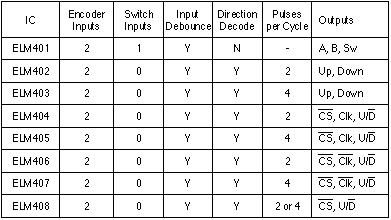

ICs for the Electronics Bench
This line of products is geared towards the electronics hobbyist or small business that needs a quick solution, but doesn't have the volume to justify developing the product in house. Each integrated circuit is created with the express purpose of relieving some of the peripheral design burden for you.
We offer integrated circuits for such functions as driving piezo buzzers and LEDs, interfacing to mechanical switches, and providing stable timing signals.
Oscillators
If you're looking to generate an AC line frequency (mains) signal that's crystal controlled, or if you're looking to generate very long time intervals and do not want to struggle with huge capacitors and a '555, then maybe these are for you.
Please note that these circuits output square wave (digital) signals, not sine waves.
ELM440 - 60Hz Generator
This circuit generates both 60Hz and 1Hz from a common 3.58MHz NTSC TV crystal. A synchronizing input is also provided for locking the output to a 60Hz line frequency signal if available (recommended for long-term stability). Switching between sync-lock and free-running is automatic. Handy for battery-backed clock circuits.
ELM446 - 50Hz Generator
This chip also uses a 3.58MHz NTSC television crystal to generate complementary 50Hz outputs as well as a 1Hz output. Greatly simplifies many timekeeping tasks as the 20ms period is often handier for calculations than 16.67ms. This circuit does not have a sync-lock input.
ELM460 - Impossible Oscillator
This integrated circuit uses no external timing components to generate signals with periods from 0.1 seconds to 10 minutes. Timing is digitally selected via four input pins, and complementary output signals are provided. It doesn't have as much output drive as a 555, but sure is much easier to use.
Rotary Decoders
Our Rotary Decoder ICs make it easy to connect a rotary (quadrature) encoder to an electronic circuit. They do all the work for you, cleaning up the signal, detecting when there is jitter in the signal, and outputting logic signals that can be used directly by a variety of circuits.
While our decoders typically get used with digital potentiometers and microprocessors, they can be used virtually anywhere that you require a clean, bounce-free digital signal that represents direction.
We currently offer several different decoder products. To help with the selection process, here is a chart that outlines some of the features of each:

ELM401 - Rotary Encoder Debounce Circuit
This circuit provides full debouncing for a rotary (quadrature) encoder. Two inputs use filtering as well as comparator and timing functions in order to handle the unique problem of noise due to the sliding contacts of a rotary encoder. A third input provides conventional debouncing for a pushbutton, should your encoder be equipped with one.
ELM402 - Rotary Decoder - 2 wire 2x Interface
The ELM402 uses the technology of the ELM401 to debounce the two quadrature signals from a rotary encoder. It then decodes these signals into an 'up' and a 'down' output. The pulse width and the polarity of the output signals can be controlled with two circuit inputs.
ELM403 - Rotary Decoder - 2 wire 4x Interface
This circuit is identical to the ELM402, but it uses 4x decoding rather than 2x. This gives four output pulses when the A and B inputs go though a cycle, rather than two.
ELM404 - Rotary Decoder - 3 wire 2x Interface
The ELM404 uses the technology of the ELM401 to debounce the two quadrature signals from a rotary encoder. It then decodes these signals into a 'chip select', a 'clock' and an 'up/down' output. The clock signal polarity can be controlled with a circuit input.
ELM405 - Rotary Decoder - 3 wire 4x Interface
This circuit is identical to the ELM404, but it uses 4x decoding rather than 2x. This gives four output pulses when the A and B inputs go though a cycle, rather than two.
ELM406 - Rotary Decoder - 3 wire 2x Interface
The ELM406 uses the technology of the ELM401 to debounce the two quadrature signals from a rotary encoder. It then decodes these signals into a 'chip select', a 'clock' and an 'up/down' output. A 'write enable' input can be used to change the output waveform to a pattern used by many digital potentiometers to cause a write of the wiper position to non-volatile memory.
ELM407 - Rotary Decoder - 3 wire 4x Interface
This circuit is identical to the ELM406, but it uses 4x decoding rather than 2x. This gives four output pulses when the A and B inputs go though a cycle, rather than two.
ELM408 - Rotary Decoder - 2 wire Interface
The ELM408 uses the technology of the ELM401 to debounce the two quadrature signals from a rotary encoder. It then decodes these signals into a 'chip select', and an 'up/down' output. Inputs are provided for 'write enable' (to change the output waveform to a pattern used by many digital potentiometers to cause a write of the wiper position to non-volatile memory), and for selecting either 2x or 4x decoding of the signals.
Switch Interfaces
These circuits are designed to be (typically) used between mechanical switches or relay contacts and an electronic circuit. Mechanical contacts can generate very noisy signals when the contacts meet or part, and fast electronic circuits can easily interpret this as multiple operations.
The following all process ('debounce') noisy input signals, and they also offer additional functionality such as latching circuits, or pulse outputs.
ELM409 - Versatile Debounce Circuit
The newest in our family of debounce circuits, the ELM409 processes only one input, but it does it well. The input has a Schmitt trigger stage to handle slow moving signals or contacts of high resistance, and there are two output pins - the main one, and its' complement. Internally, the signal can be processed in several different ways, providing different debounce periods, outputs that follow the signal or change on edges, and outputs that are steady or a single pulse. In all, there are eight different modes of operation that can be selected, making it a truly versatile debounce circuit.
ELM410 - Triple Debounce Circuit
Internal pullups simplify the connection of up to three mechanical switches to this device. Each independent circuit provides 25ms of debouncing on both pickup and dropout. A very handy device for interfacing to almost any logic circuit.
ELM411 - Debounce Circuit with Latch
Similar to the ELM410, but one of the outputs toggle on and off with each press of a momentary pushbutton. The other two circuits simply provide inverted, debounced outputs.
ELM415 - Up/Down Interface
Connect two pushbuttons to this IC, label one "Up" and the other one "Down", then tie the outputs to your favourite digital potentiometer or counter circuit. All of the logic for switch debouncing, up/down encoding, count pulsing and inversion, and even an auto-repeat function are included in this circuit. Very handy, with many possibilities.
Timers
These circuits can generate extremely long time interval signals, some as long as a week. This may be useful if developing battery charging circuits, or controlling functions which you want to occur hourly, daily, or weekly.
ELM380 - Battery Charger Timer
A single pushbutton press initiates either an eight or a fourteen hour timing cycle for charging Nickel Cadmium batteries. If desired, the period can also be programmed in one hour increments. Requires a full-wave rectified 60Hz signal for timing.
ELM381 - 60Hz Long Interval Counter
Reduce circuit board clutter when trying to obtain those very long time delays. The ELM381 provides 1 hour to 1 week periods using a 60Hz clock input. Digitally select one of four desired periods, apply a line frequency signal to the Schmitt clock input, and use the high current outputs to drive your circuit.
ELM382 - 50Hz Long Interval Counter
The ELM382 is very similar to the ELM381, except that it expects a 50Hz input for the timing signal. Outputs can be 1 hour, 12 hours, 1 day, or 1 week, exactly as the ELM381. Simply apply a line frequency signal to the Schmitt clock input, and use the high current outputs to drive your circuit.
Misc
These circuits are handy when all you need to do is create a buzzer circuit, control the power-on sequence (and provide a status LED signal), or possibly generate an NTSC video signal.
ELM304 - NTSC Video Generator
Ever want to use a stereo VCR to record only audio, but found that it needed some video before it would record anything? This handy circuit provides a blank raster that is perfect for these applications. Can also produce a test pattern of four gray-scale bars. The output is a fully interlaced, standard 60Hz field/30Hz frame rate monochrome signal (there is no colourburst generated).
ELM412 - Piezo Element Driver
Need to simply turn a piezo buzzer on and off? The ELM412 provides all of the logic to drive a buzzer for you. It has one pin control, and digital selection of eight different operating frequencies. A push-pull output stage is used to provide high output power, even with a 3V supply.
ELM413 - LED Driver
A handy device for driving either single or two colour LEDs, based on the state of an input. An auxiliary (delayed) output is provided for sequentially enabling other circuits after 0.1 to 5 seconds. This self contained circuit generates its own timing signals, and can directly drive most LEDs using only a single resistor.